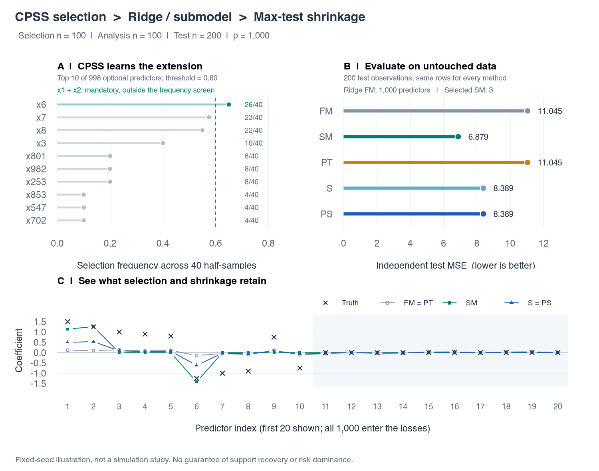

HDMaxShrink provides test-guided interpolation between full-model and submodel coefficient estimates. The current workflow separates submodel selection, estimation, and held-out evaluation.
Install
Use R 4.1 or later, C++17 and the declared Rcpp/RcppArmadillo dependencies.
remotes::install_github("byuzbasi/HDMaxShrink", upgrade = "never")This is a GitHub research package. The associated methods record is the 2026 arXiv preprint, not a journal publication.
Follow the current example
The repository’s self-contained quick-start script generates independent selection, analysis and test samples. It uses CPSS-LASSO for optional additions to a prespecified mandatory core, a joint Ridge full model, and an exact-null SVD submodel. Run it deliberately after installation:
source(system.file("examples", "quickstart.R", package = "HDMaxShrink"))The script uses 1,000 predictors, 20 complementary selection pairs and 199 conditional Gaussian draws. It is one synthetic illustration, not the paper’s production study. This guide displays the command without executing that calibration during the website build.

This figure is retained from the repository’s fixed-seed quick-start example; it is not new benchmark evidence. Reproduce it with the linked script and report the exact package version used.
Choose a documented route
| Route | Entry point | Scope |
|---|---|---|
| Current independent-selection route |
cpss_select_core(),
fit_cpss_ridge_shrinkage()
|
CPSS-selected exact-null submodel and all-predictor Ridge endpoint |
| Prespecified-core alternative | fit_hd_shrinkage() |
Retained joint square-root-LASSO workflow |
| Historical sensitivity routes |
fit_partial_sqrt_lasso_shrinkage(),
fit_ridge_mcp_shrinkage()
|
Explicitly retained research modes, not silent replacements |
| Inspect estimates |
coef(), predict()
|
Original-scale coefficients and predictions |
The retained technical guide covers several frameworks; its square-root-LASSO section is an alternative to the current CPSS/Ridge route. Consult the function reference for the selected route rather than mixing their arguments or inferential assumptions.
Read diagnostics before interpreting shrinkage
Selection and analysis samples must be independent for the
conditional argument. A selected submodel is not necessarily a true
null. Inspect rank, test calibration and convergence information, and
keep held-out data out of selection. Classical James–Stein dominance is
not asserted. The optional CPSS-MCP sensitivity requires the declared
grpreg dependency.
See data and reproduction for input roles, source provenance, version reporting and validation boundaries.